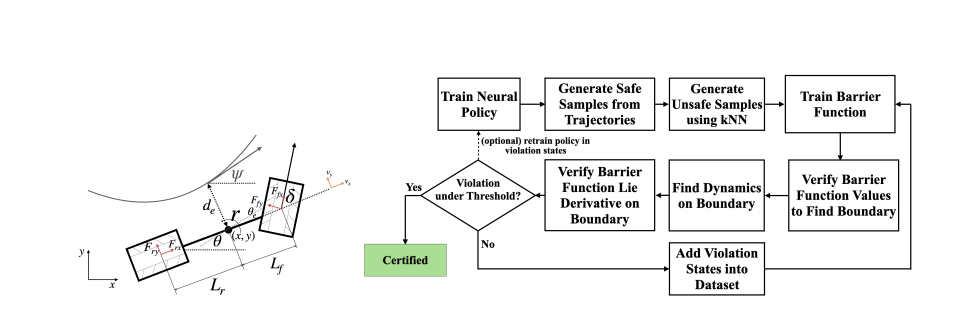
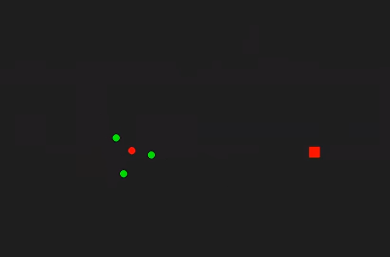
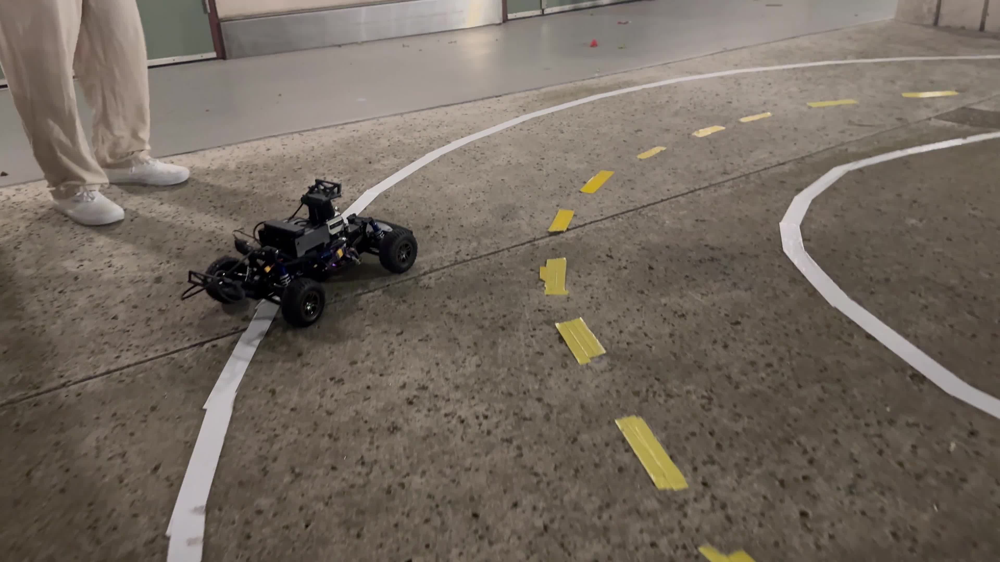
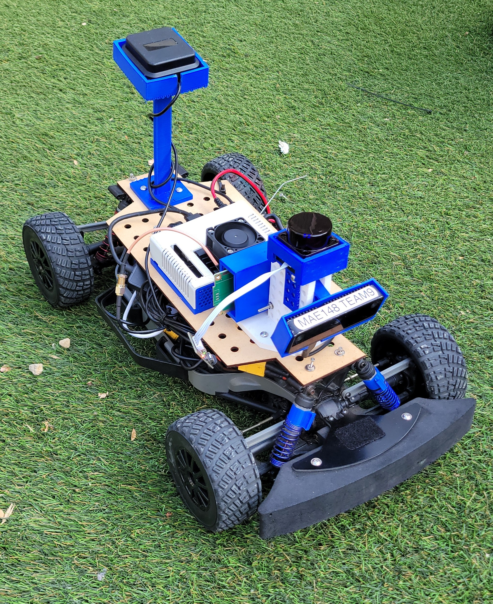
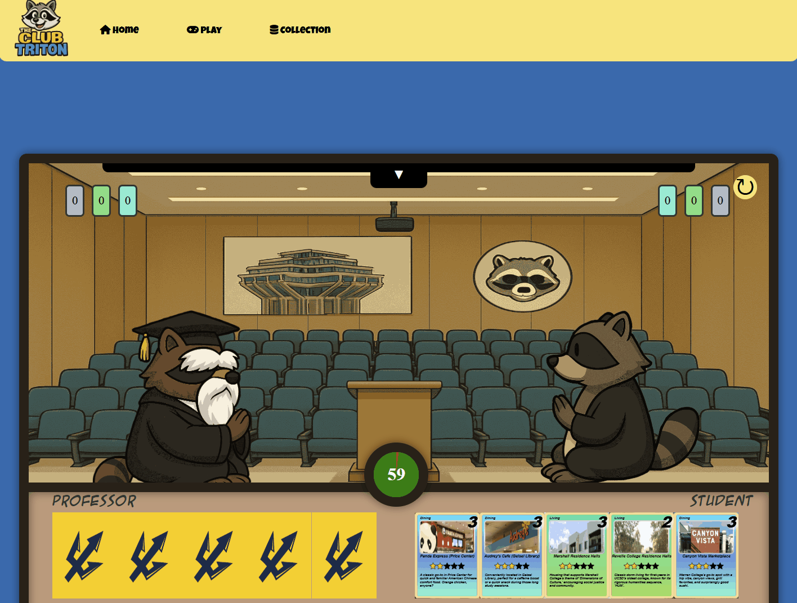
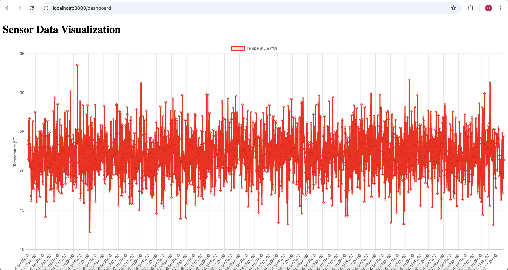
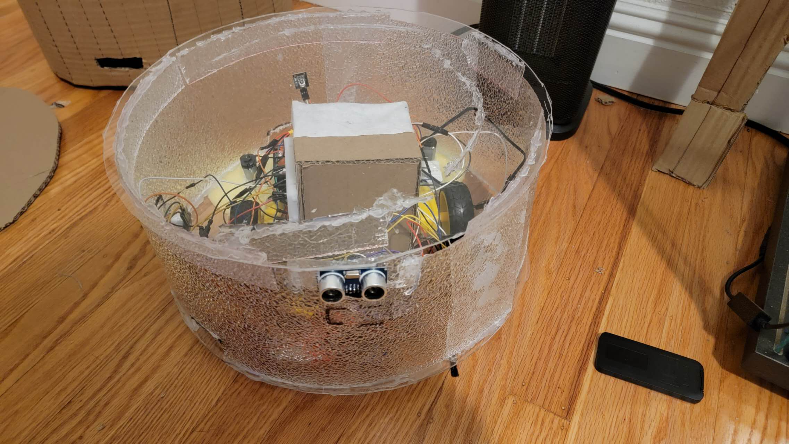
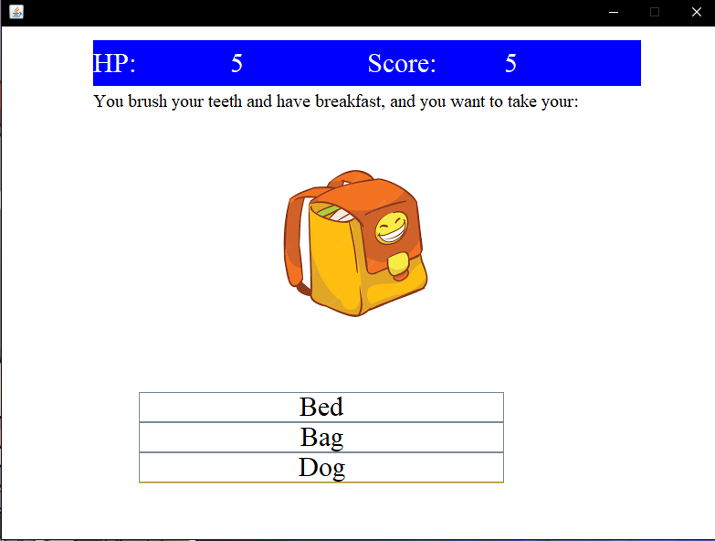

- Designed and implemented a perception pipeline for autonomous racing using camera-based object detection
- Trained and evaluated YOLO models on 9,000+ labeled images under varying lighting and environmental conditions
- Integrated perception outputs with ROS2-based multi-sensor fusion for real-time decision making
- Adapted perception and control stack from F1TENTH platform to full-scale EV go-kart system
- Improved robustness and detection stability for real-world autonomous driving scenarios

- Implemented GPS-based navigation, ROS path tracking, and neural-network driving models on Donkey Car simulators and real hardware
- Trained driving models at 10× the scale of peer teams and diagnosed real-world performance issues such as lighting variation and motor noise
- Integrated a Canny edge–based preprocessing pipeline to improve vision robustness under varying lighting conditions
- Prototyped ROS–Donkey Car integration for real-time LiDAR-based safety monitoring
- Achieved top racing performance in class and was invited to join the Autonomous Systems Lab afterward

- Led a 12-person team to build a UCSD-themed browser game, mentoring members new to web development
- Provided technical guidance through code reviews, pair programming, and system design discussions
- Implemented CI/CD pipeline with linting, validation, testing, documentation, and deployment
- Developed 30+ custom game cards using IndexedDB for persistent client-side storage
- Built multiple web pages including homepage, gameplay interface, card collection (CRUD), and custom 404 page
- Managed Agile workflow using GitHub Issues, Projects, and pull requests with weekly sprints and retrospectives
- Achieved a final project score of 95/100 for execution quality, collaboration, and technical completeness

- Developed a full-stack IoT web application for real-time weather monitoring using ESP32 devices
- Implemented MQTT-based data streaming for temperature, humidity, and light sensors with MySQL backend storage
- Built user authentication system with login, session persistence, and secure auto-logout
- Designed custom dashboard pages for managing ESP32 devices and wardrobe items with full CRUD functionality
- Integrated external weather APIs and used an LLM to generate personalized outfit recommendations based on weather and user data

Lead a group of 5 to build a robot that can sweep, vacuum, and mop at the same time, and can be controled by a IR remoter. DC motors, ultrasonic sensors, IR sensors, 5V batteries and arduino were used in this project.

A text adventure game with sound and scoreboard using Java Swing for elementary students. Users need to choose correct answers based on the questions before they lose all their HP. The game includes a cheerful opening and different sound effects for choosing right and wrong answers. The top 5 players’ scores will be saved and can be viewed on the starting page.